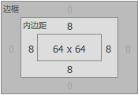
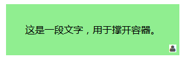

CSS常用背景图片定位方法
更新日期:
CSS背景图片定位其实对于每一位学习前端的同学来说，都已经非常熟悉了。网上铺天盖地的最常见的一种方案就是在父元素中relative，然后子元素absolute。这种方案当然好，不过带来的一个缺点就是会改变元素的层级关系，如果在多个地方使用，这样的层叠嵌套的关系会十分混乱。
先暂时抛弃那种方案，给大家分享几种CSS背景图片定位的方案。
整篇文章会按照如下思路：
无依赖的absolute定位
在网络上，对absolute存在这样一个误解，认为绝对定位absolute的使用必须要设置父元素相对定位relative。这样的理解不能认为是错的，只能说对定义没有完全认识。在W3C文档中是这样定义absolute的：
生成绝对定位的元素，相对于static定位以外的第一个父元素进行定位。元素的位置通过’left’ , ‘right’ , ‘bottom’ , ‘top’ 属性进行规定。
对这句话的理解应该如下(L : left，R：right，B：bottom，T：top)
- a：当给一个元素设置position:absolute之后，如果父元素没有设置position:relative，则该元素是通过LRBT依据可视窗口区域的左上角进行定位;如果父元素设置了position:relative，则该元素是通过LRBT依据父元素容器的左上角进行定位。
b：在生成绝对定位的元素时，不管父元素是否设置了position:relative，使用margin-top , margin-left , margin-right , margin-bottom其中的两个非相反方向进行定位，其效果会像相对定位relative一样，根据自身位置进行定位。但是使用margin定位与relative唯一的区别就是，absolute脱离文档流，原来的物理空间已经消失，而relative没有脱离文档流，原来的物理空间依然占据。
所以，可以使用无依赖relative的absolute进行定位，定位方法是使用margin，而不能使用LRBT。
代码如下：.keith { margin: 2em; width: 5em; height: 5em; background: lightgreen; } .keith .main { position: absolute; background: url("../images/my-icons/Loginicon.png") scroll no-repeat 0 0; width: 21px; height: 21px; margin-left: calc(5em - 25px); margin-top: calc(5em - 25px); }
上面代码中，使用margin-left , margin-top 与 position:absolute来对图片进行定位。使用了CSS3中的calc()来计算需要定位的值。
示例图片如下：
background-position扩展语法
在CSS3背景与边框中，background-position属性已经得到扩展，它允许我们指定背景图片距离任意角的偏移量，只要我们在偏移量前面指定关键字即可。
代码如下：
.keith{
margin:2em;
width:5em;
height:5em;
background:lightgreen url('../images/my-icons/Loginicon.png') scroll no-repeat ;
background-position:right 5px bottom 5px;
};
上面代码中，使用background-position扩展语法即可实现距离右下角5px距离的定位。
background-origin定位
background-origin是CSS3中新增的属性，主要用来决定background-position属性的参考原点，即决定背景图片定位的起点。在默认情况下，背景图片的background-position属性总是以元素左上角为坐标原定对背景图片进行背景定位。
background-origin有三个属性值content-box , padding-box(默认值) , border-box 。
看看如何使用这个属性来对背景图片进行右下角5px的定位，代码如下。
.keith {
margin: 2em;
width: 5em;
height: 5em;
padding: .5em;
background: lightgreen url("../images/my-icons/Loginicon.png") scroll no-repeat;
background-position: right bottom;
-moz-background-origin: content;
-o-background-origin: content-box;
-webkit-background-origin: content;
background-origin: content-box;
-moz-box-sizing: border-box;
-webkit-box-sizing: border-box;
box-sizing: border-box;
}
上面代码中，给盒子设置了padding值。使用box-sizing属性来调整div在浏览器下的盒模型为IE盒模型，border-box的意思是总宽度=content area + padding + border 。这里给background-origin属性设置了content-box，可能大家会不太理解，为什么不是padding-box。看一个。

上面图片中，黄色区域的是margin，紫色区域的是padding，浅蓝色区域的是content-area。如果给元素设置了padding-box，那么此时图片会定位在右下角，与右下角没有任何空间。所以此时要使用content-box进行定位。最终的效果如下。
calc()定位
如果我们希望通过内容来撑开容器的宽度和高度时，而不去固定高度和宽度时，这时需要使用calc属性+background-position属性结合使用，来对图片进行定位。因为这时候并不知道容器的高度和宽度，只能有100%来进行计算。
这是一段文字，用于撑开容器。
<div class="keith">
这是一段文字，用于撑开容器。<br>
</div>
.keith{
margin:2em;
padding:2em;
display:inline-block;
background:lightgreen url('../images/my-icons/Loginicon.png') scroll no-repeat;
background-position:calc(100% - 5px) calc(100% - 5px);
}
示例图片如下：

完。感谢大家的阅读。
原文链接：http://www.cnblogs.com/Uncle-Keith/p/5937180.html?utm_source=tuicool&utm_medium=referral